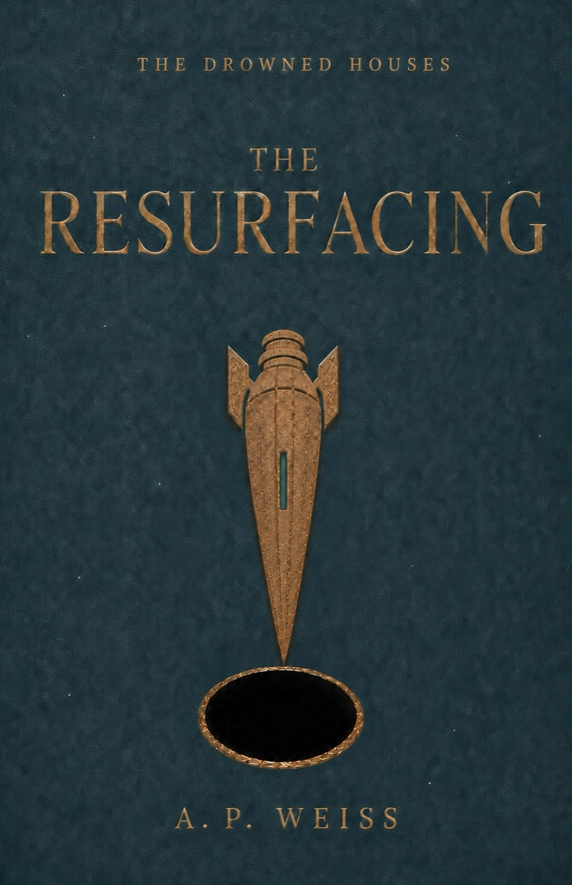
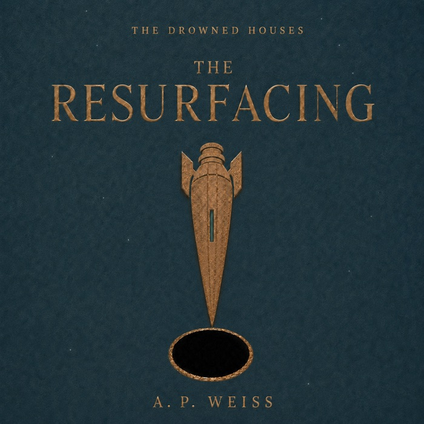
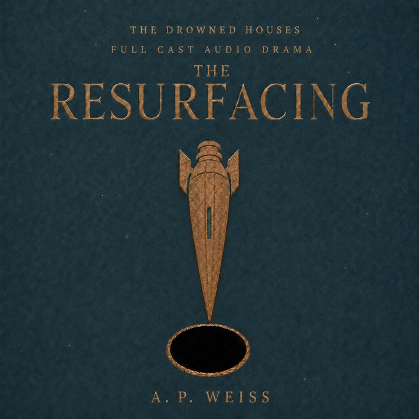
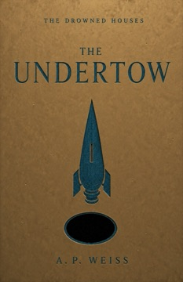

Instrument at rest

↑The Drowned Houses · Book One
The Resurfacing
House Vhast was driven down nine hundred years ago and presumed extinct past the Threshold. It has just climbed out — young, rich beyond audit, and holding a claim to half the Reach.
The great houses do not die. They sink, and rule the surface from centuries below.
In the Amaranth Reach a dynasty does not end. It descends: a patriarch walks the Stair of Years toward the horizon, where a year of his is a century above, and rules by letters that arrive generations late. House Vhast, the Tyrant house, was driven down nine hundred years ago and presumed extinct. Now a transmission, dated and authenticated, and a house that should not exist, climbed out.
Surfacing is priced.
Read it, or listen.
 E-bookComing
E-bookComing- PaperbackComing
- HardcoverComing

AudiobookComing Immersive audiobookComing
Immersive audiobookComing
Audio dramaComing

↓ Book TwoThe UndertowAbout this book